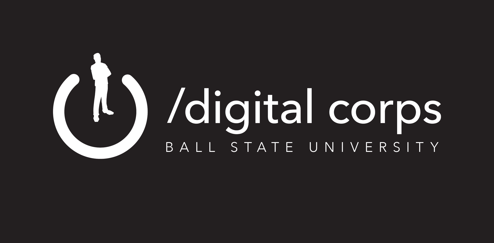
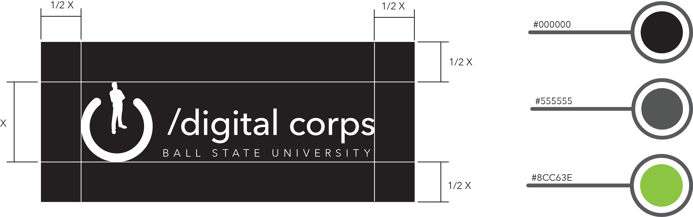
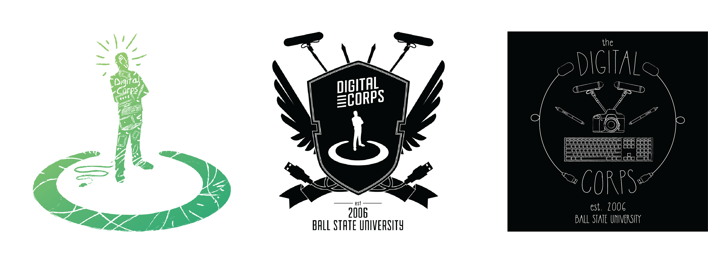

THE DIGITAL CORPS
Identity
It’s always fun when you are able to contribute to the very place where you work. As the ten year anniversary of the Digital Corps began to approach, I was tasked with a number of projects related to this milestone.
Redesign
In an effort to maintain branding continuity, I didn’t want to anything massively drastic, so instead I opted to rework and update our previous mark. I began by modernizing the typeface. The original Currier encased in brackets reflected an earlier version of the Corps that seemed outdated. To replace it, I chose a modern geometric sans serif to create a sense of uniformity between the type and the circular power symbol. And while I wanted to maintain the original logomark, I did want to help make it both more dynamic and readable. While the original version was created from a photograph of a model standing in the position necessary, I felt that hand drawing the new version would allow for more control and even allow me to break some anatomical rules in order for a more interesting design. In addition, the power ring was altered for a wider opening to help with readability. Lastly, I created an an alternate female version to better represent our workforce.

Anniversary
As we came up on our tenth year anniversary, it seemed like an opportunity to do something special for current and former employees. As such, my approach was to focus less on the technical side of what we do and instead to attempt to celebrate the people. I liked the idea of creating a badge to celebrate the various skills and disciplines within the Corps. I took the newly redesigned logomark and warped the circle into a flat plain in order to emphasize that the Corps exists as a platform from which to grow and succeed.
